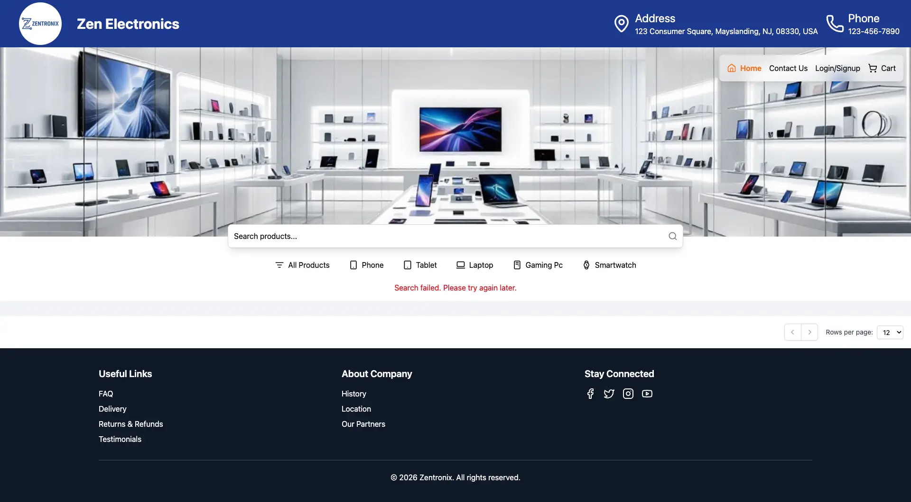
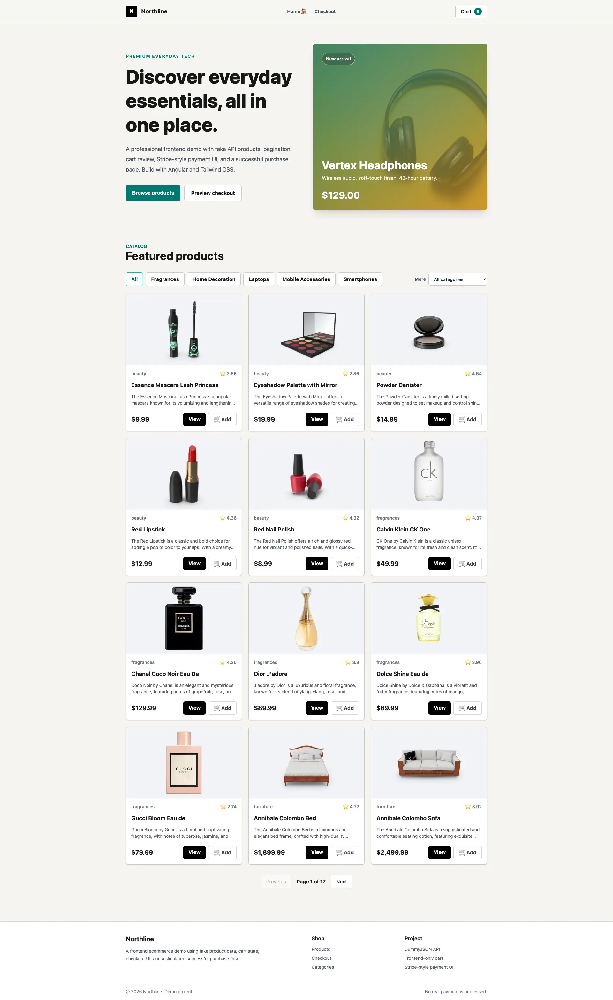

Frontend Engineering
Angular components, routing, state, forms, animations, and responsive interfaces.
Full Stack Developer
I build responsive frontend applications and scalable backend services using Angular, Java, Spring Boot, Tailwind CSS, and modern deployment workflows.

About
My work connects frontend craft with backend structure: reusable Angular components, responsive layouts, Spring Boot services, REST APIs, relational data, and cloud-aware delivery.
Angular components, routing, state, forms, animations, and responsive interfaces.
Java services, Spring Boot APIs, validation, persistence, and database design.
AWS-ready deployment habits, environment setup, Docker, and release workflows.
Currently Building
Angular storefront, product flows, checkout UI, and deployment-ready frontend structure.
Support-style assistant flow for product questions, guided help, and user interaction.
Build, environment, hosting, and release workflow practice for production-minded apps.
Experience
Building Angular interfaces, Java/Spring Boot APIs, database-backed workflows, and cloud-ready deployments.
Focused on software architecture, Java development, web systems, data management, and cloud foundations.
Turning requirements into working products through UI implementation, API integration, state management, and testing.
Projects



GitHub Activity